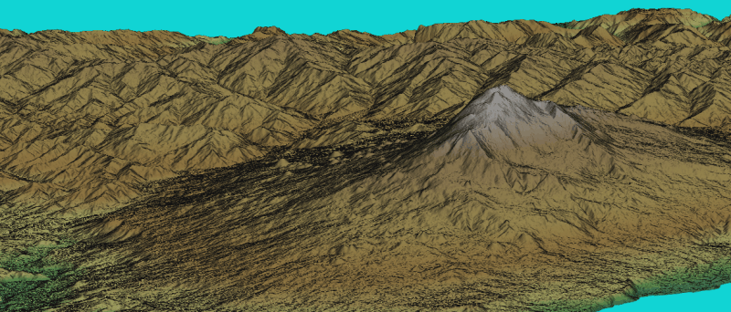

DESCRIPTION
r.in.srtm.region imports all SRTM tiles covering the
current region or region extents given with region into GRASS,
patches the tiles together and optionally interpolates holes for
SRTM V2.1. The SRTM V003 products are already void-filled.
r.in.srtm.region downloads
(SRTM product description)
Importantly, for the SRTM tiles download a user registration is needed at
https://urs.earthdata.nasa.gov/users/new
In the user profile, two specific applications must be approved in the "My application" tab:
- "LP DAAC Data Pool" application, and
- "Earthdata Search" application.
EXAMPLE
Import of SRTMGL1 V003 (1 arc seconds ~ 30m) covering the current computational region:
# run in LatLong location - Sicily East, Italy
g.region n=39 s=37 w=14 e=16 res=0:00:01 -p
# use own credentials here
r.in.srtm.region -1 user="my_nasa_user" password="my_nasa_pw" output=srtm_sicily_1arc memory=2000
r.univar srtm_sicily_1arc

Figure: Eta volcano (Sicily, Italy) shown in NVIZ
SEE ALSO
r.in.srtm,
r.in.nasadem (addon)
The Shuttle Radar Topography Mission
homepage at NASA's JPL (see also MEaSUREs Data Product Table - SRTM).
The SRTM v3 documentation.
SRTMGL1: NASA Shuttle Radar Topography Mission Global 1 arc second V003
NASA JPL. (2013). NASA Shuttle Radar Topography Mission Global 1 arc second. NASA LP DAAC. http://doi.org/10.5067/MEaSUREs/SRTM/SRTMGL1.003
REFERENCES
M. Neteler, 2005. SRTM and VMAP0 data in OGR and GRASS.
GRASS Newsletter, Vol.3, pp. 2-6, June 2005. ISSN 1614-8746.
AUTHORS
Markus Metz
Reprojection support: Anika Bettge, mundialis
{kind=link}